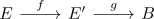
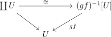

surjective covering map and composition
Proposition
Let $E,E',B$ be topological spaces and $f: E \rightarrow E', g: E' \rightarrow B$ be continuous maps

such that
are covering maps.
Suppose $f$ is surjective and $B$ locally path connected, then $g: E' \rightarrow B$ is also a covering map
Proof
Warning: abuse of notation
Choose a trivializing open cover $U$ of $B$ for $gf$. w.l.o.g. this $U$ may be taken as pathconnected, as each
Then we get

note that since
\begin{displaymath}
\begin{tikzcd}
U \arrow[]{rd}{\mathrm{id}} \arrow[]{r}{\iota} & \coprod U \arrow[]{rr}{\cong} \arrow[]{rd}{} & & \arrow[]{ld}{gf} (gf)^{-1}[U] \\
& & U & \\
\end{tikzcd}
\end{displaymath}commutes, the map $gf$ is injective on each $U$ (after applying the homeomorphism $\varphi$)
Let $b \in B$, $e_i \in g^{-1}[b]$, then there exists an $e_i' \in (gf)^{-1}[b]$. By injective local homeomorphism as homeomorphism for the image, $U \rightarrow f_i[U] \subseteq E'$ is a homeomorphism.
Then let $\tilde{e}_i$ go over each fiber $e_i$ with $f(\tilde{e}_i) = e_i$
is a welldefined homeomorphism, as for a connected component $[y] \subseteq g^{-1}[U]$ there exists at most one $U_i$ with $f[U_i] \subseteq [y]$, as $f
we claim, that
suppose $u \in g^{-1}[U]$, then there exists an $u' \in \coprod U_i$ such that $f(u') = u$ Then choose a path from $u'$ to some $e_i$. This gets extended to a path from $u$ to $b_i$ for some $b_i$
Now choose a trivializing cover $V_i$ of $E'$. it follows, that w.l.o.g. there exits a trivializing cover $V_i \subseteq g^{-1}[U]$ of the path. Choose $\tilde{e}_i$, such that $\tilde{e}_i \in \coprod_{ \tilde{e}_i} U_i$
By unique path lifting for a covering map, there exists a lift of the path inside $f^{-1}[V_i] \subseteq \coprod U_i$ with startpoint $\tilde{e}_i$.
Since the path is inside $\coprod U_i$ and two different $U_i, U_j$ are not path connected, it follows, that the endpoint $u$ is inside $U_i$ of $\tilde{e}_i$. Hence $u \in \coprod_{\tilde{e}_i} U_i$